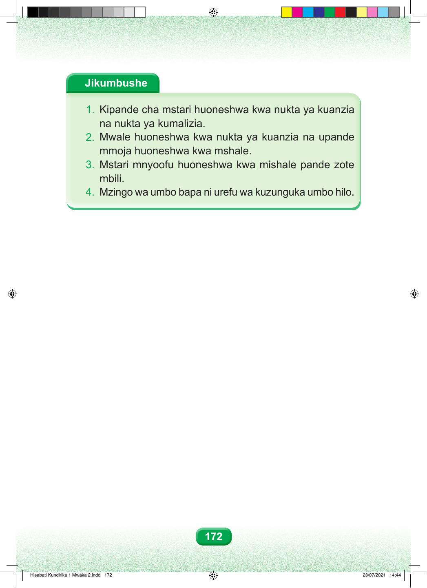

Jikumbushe 1. Kipande cha mstari huoneshwa kwa nukta ya kuanzia na nukta ya kumalizia. 2. Mwale huoneshwa kwa nukta ya kuanzia na upande mmoja huoneshwa kwa mshale. 3. Mstari mnyoofu huoneshwa kwa mishale pande zote mbili. 4. Mzingo wa umbo bapa ni urefu wa kuzunguka umbo hilo. 172 Hisabati Kundirika 1 Mwaka 2.indd 172 23/07/2021 14:44